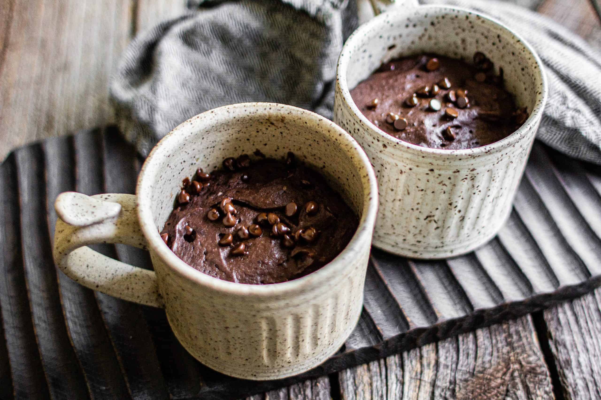

Chocolate Mug Cake

Preparation: 5 minutes · Cooking: 1–2 minutes · Serves: 1
Ingredients
- 4 tablespoons flour
- 2 tablespoons sugar
- 2 tablespoons cocoa powder
- ¼ teaspoon baking powder
- 3 tablespoons milk
- 1 tablespoon vegetable oil
- A few chocolate chips (optional)
How to Prepare
- Mix the flour, sugar, cocoa powder, and baking powder in a microwave-safe mug.
- Add the milk and oil.
- Stir until the mixture is smooth.
- Add chocolate chips if you like.
- Microwave for about 60–90 seconds, checking that the cake is cooked.
- Let it cool for a minute before eating.
A soft chocolate cake made quickly in a mug using a microwave. Watch the tutorial video (2 min).